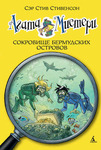

Агата Мистери Сокровище бермудских островов

Наделенная потрясающим чутьём и феноменальной памятью, Агата Мистери мечтает стать писательницей. Но это в будущем, а пока она просто превосходная сыщица! Вместе со своим незадачливым братом Ларри, студентом детективной школы, она путешествует по миру, чтобы решать самые запутанные загадки. А помогают им преданный дворецкий, вредный сибирский кот и множество чудаковатых родственников.
Агата Мистери Сокровище бермудских островов
Атлантический океан. Бушует сильнейший шторм. Бесценный календарь майя, выполненный из чистого золота, неожиданно исчезает в одном из самых загадочных уголков планеты — Бермудском треугольнике! Агате и её двоюродному брату предстоит встретиться не только с алчным и опасным преступником, но и с древними морскими божествами...